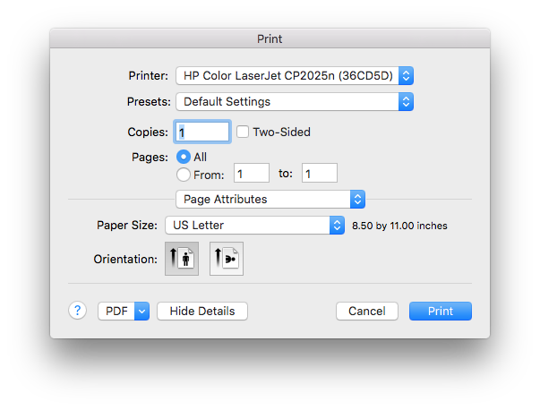

5.6. Printing¶
VisIt allows you to print the contents of any visualization window to a network printer or to a PostScript file.
5.6.1. The Printer Window¶

Fig. 5.19 Printer window
Open the Printer Window by selecting Print window from the Main Window’s File menu. The Printer Window’s appearance is influenced by the platform on which you are running VisIt so you may find that it looks somewhat different when you use the Windows, Unix, or MacOS X versions of VisIt. The MacOS X version of the Printer Window is shown in Figure 5.19 .